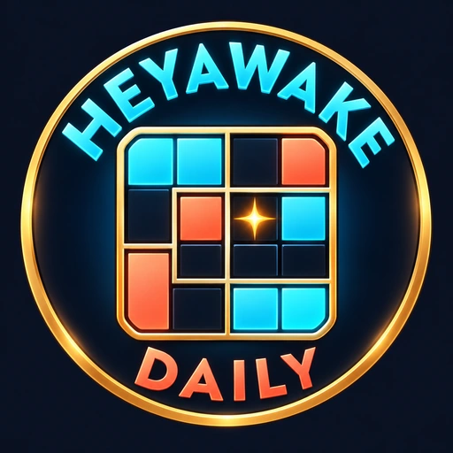
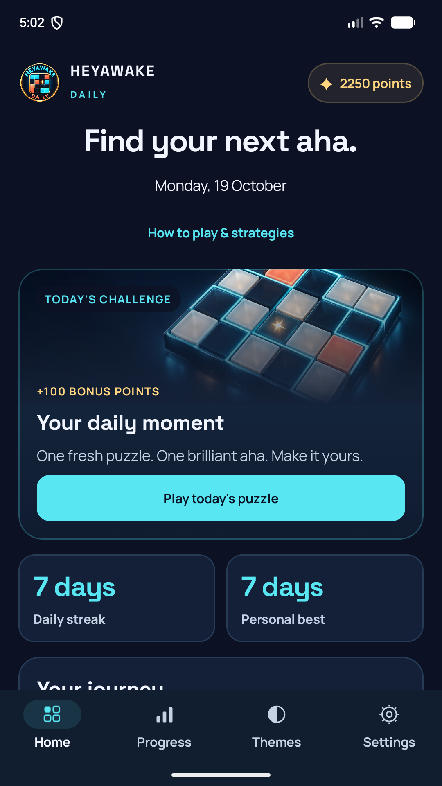
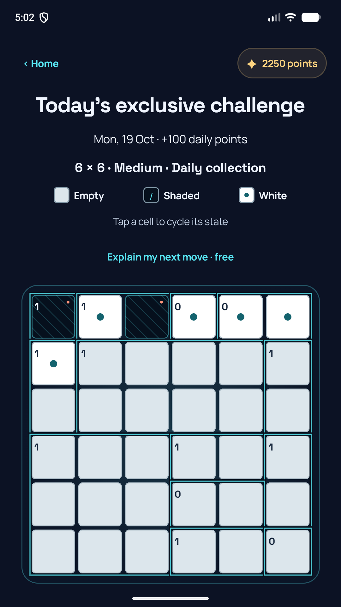
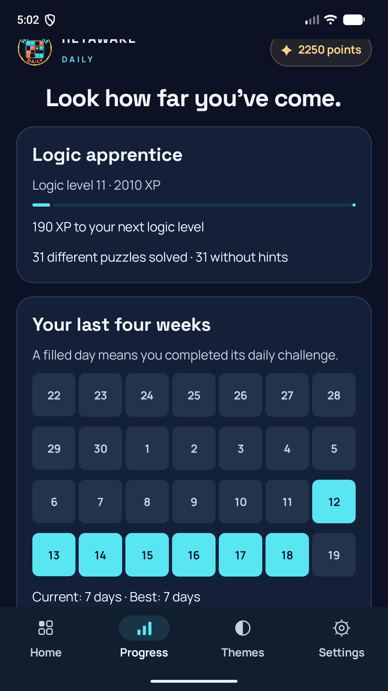
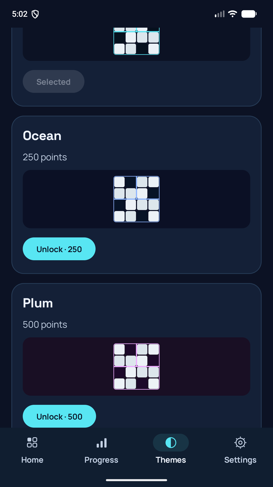

Read the room.
The number tells you exactly how many cells to shade inside that room.

HEYAWAKEDAILYYOUR DAILY SPARK OF LOGIC
A small grid. A fresh perspective. Discover the room-dividing logic puzzle that makes every little breakthrough feel brilliant.
Android release in preparation · Offline puzzle play
SMALL GRID. BIG AHA.
Shade the right cells. Keep the white ones connected. Give this real 4 × 4 puzzle a try.
Tap a cell to cycle its state. Keyboard arrows move between cells.
Your move. Every cell has its place.
The number tells you exactly how many cells to shade inside that room.
Shaded cells can meet at corners, but they must never share an edge.
All white cells must form one connected area, joined along their edges.
A straight run of white cells can cross at most one room boundary.
A free browser demo. Your progress here is separate from the Android app.
MAKE A LITTLE ROOM FOR YOU
Drop in for today's challenge. Stay for another room. Build a rhythm that fits your day, with every breakthrough saved along the way.

A daily challenge and a one-time 100-point bonus.

10,000 classic puzzles plus a larger-board journey, undo, and a helpful nudge when you need it.

Streaks, goals, XP and 11 achievement badges.
Actual app screens. Progress shown is an example player profile.

A LITTLE MORE YOUEARN YOUR OWN ATMOSPHERE
Turn your solves into points. Reveal a cell for 50, or save up for a fresh board theme. Once a theme is yours, it stays yours.
Solve 3 different puzzles today or 12 this week for bonus points.
From your first solve to your 10,000th. Earn badges at meaningful milestones.
Evening reminders are optional and off by default. Your time is yours.
A FEW THINGS TO KNOW
A Japanese-style logic puzzle played on a grid split into rectangular rooms. You shade cells using four rules. Every puzzle in this catalogue has been exhaustively checked to have exactly one solution. Human difficulty is not yet graded.
Yes. The Android app includes all 10,000 classic puzzles plus a larger-board journey and selects its daily challenge on your device. Your boards, points and progress are saved locally. The browser demo needs this website to load.
The daily challenge is selected from the same 10,000-level catalogue. It may be a puzzle you've already played in your journey. Its daily bonus is separate from the first-solve reward.
Your current daily streak starts again when you return. Your personal best, completed levels, earned points, themes and badges stay with you. Points do not expire.
No account is required. The current version saves progress on this device, with no cloud sync. Save a manual backup in Settings before clearing app storage or uninstalling if you want to preserve that progress.
The Android release is in preparation. This site introduces the game and offers a playable demo; it does not currently claim an available Play Store release.
ONE GRID. ONE GREAT LITTLE MOMENT.
Built for Android. Made for your daily spark.
LEARN, THEN FIND YOUR RHYTHM
The Android app includes six interactive lessons: cell controls, room clues, shaded-cell spacing, connected white areas, straight white lines, and a complete practice puzzle. Free teaching hints explain the next deduction.
Keep exploring with 5 × 5 and 6 × 6 journey puzzles, an exclusive daily collection, rotating weekly missions, monthly stars, personal bests, and earned streak freezes. Save a portable progress backup to a folder or cloud drive you choose.